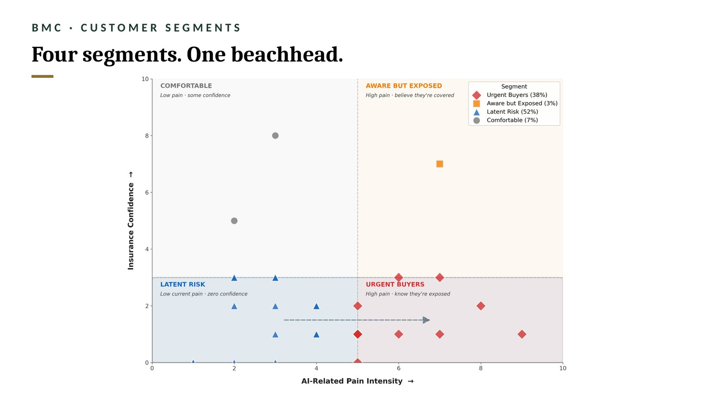

Entrepreneurship · Start-up · MBA course
Green Tree Risk Group: Start-Up Groundwork
Building the foundation for an insurtech company focused on AI liability and cyber insurance.
- Role
- COO and co-founder
- Setting
- MBA course, Strategic Venture Development
- Timeline
- January to May 2026
- Team
- Six co-founders
- Focus
- AI liability and cyber insurance
- Status
- Groundwork complete; not launched

The idea
The question behind Green Tree Risk Group is simple: when an AI tool makes a mistake that costs a business money, who pays? Cyber liability insurance and professional liability insurance each cover part of the picture, and there is a gap between them that most businesses have never examined. The company was built around two engines. The first is a managing general agent (MGA) platform, a specialized underwriting partner that designs and manages insurance programs on behalf of carriers, focused on AI liability and cyber insurance. The second is software that helps organizations govern how they use AI. The thesis is that organizations adopting AI need both better coverage and better controls, and that each side strengthens the other.
Customer discovery
The venture came out of an MBA course, Strategic Venture Development, and I was one of six co-founders. The other five knew more about data and insurance than I did, so I took the COO role and focused on keeping the team organized and moving together. Over 16 weeks we interviewed more than 80 insurance, cyber and AI industry professionals. Each team member completed one or two interviews a week. Every week we met in class to compare findings, get mentorship from our professor and plan the next round, and I coordinated that cycle. We used what we heard to work through the Business Model Canvas block by block, turning it into decisions about customers, revenue streams, relationships, channels and partners.
The central finding was consistent: none of the people we interviewed felt confident that their existing insurance would respond to an AI-related incident, and most expected their own use of AI to grow.

Financial model and valuation
I built the company’s six-year financial model from scratch, including partnership structures, a detailed expense build, and a balanced balance sheet, with cell-level source notes so every assumption could be traced. The hardest judgment in the model was how much of the market we could realistically capture. To test that assumption we looked at how quickly cyber insurance grew between 2014 and 2019. I also developed a valuation approach based on public market multiples that values the underwriting and software businesses separately and then combines them.
Investor pitch
The course ended with a real investor pitch. Our team presented to two investors from different venture capital firms and to our professor. I produced the pitch deck and the supporting market sizing and pricing research behind it.
Where it stands
We never launched the business. The founding groundwork is complete: the business model, the financial model, the valuation approach and the pitch. After the pitch, the team went separate ways. Some of us had joined the course for credit and others wanted to build a company, and walking away was the easier path. I do not hold that against anyone; it was an honest choice for each of us.
What I took away
Start-up groundwork is mostly disciplined learning: testing assumptions with real customers before committing money to them, and building models that show their work. More than anything it taught me to connect the dots, pulling insurance, technology and finance into one picture from more than 80 conversations. It is the kind of work my entrepreneurship concentration prepared me for.